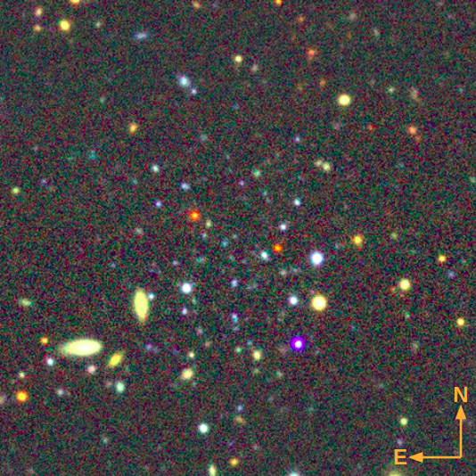
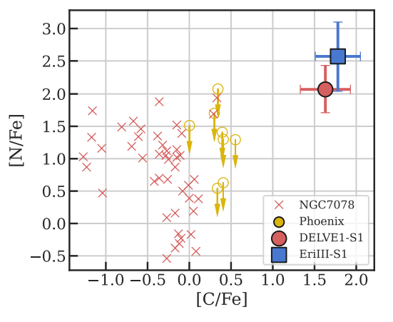
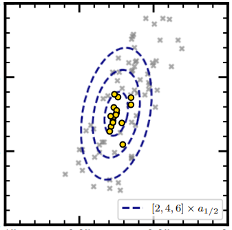

Other Ultra-Faint Compact Satellite Papers
Below, we highlight related work by our team studying the Milky Way's ultra-faint compact satellite population. These studies focus on individual objects of interest, and are featured heavily in Paper I.
Discovery of DELVE 6: An Ancient Star Cluster Stripped from the Small Magellanic Cloud?
We present the discovery and photometric characterization of DELVE 6, an ultra-faint compact satellite located just $\sim 10\deg$ on sky from the center of the Small Magellanic Cloud.
DELVE 1 and Eridanus III: Unusual Carbon-Rich Star Clusters or the Smallest Dwarf Galaxies?
We present both medium and high-resolution spectroscopy of stars in the ultra-faint compact satellites DELVE 1 and Eridanus III.
Stellar Kinematics and Metallicities
in Ursa Major III / UNIONS 1:
the faintest known MW satellite

We present new Keck II/DEIMOS and Keck I/LRIS spectroscopy of UMaIII/U1: the lowest-luminosity old stellar population known in the universe.